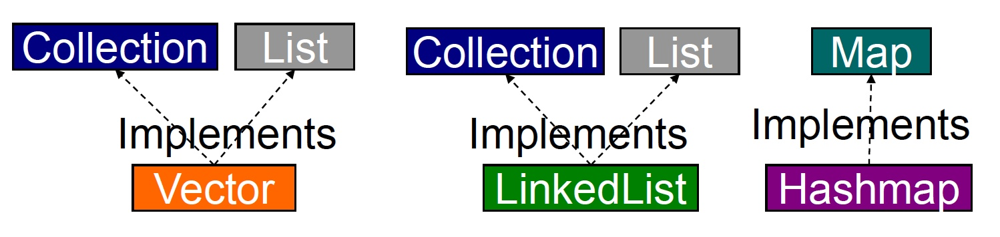
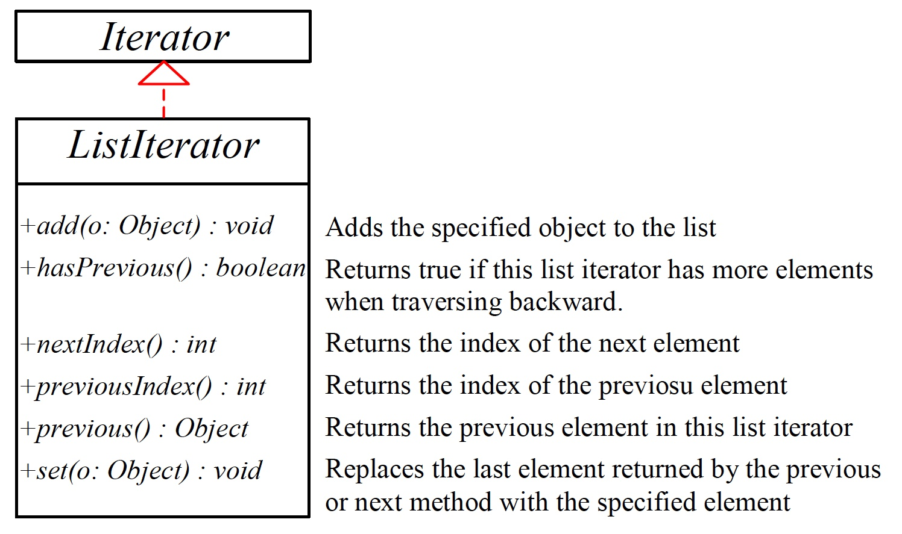
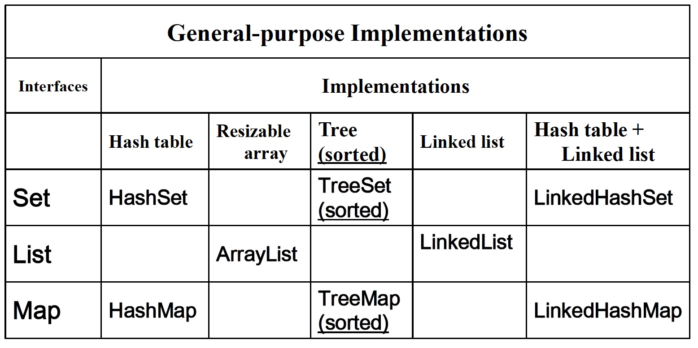

Review: Java Generics
- A way to control a class type definitions.
- Otherwise known as parameterised types or templates.
- A way of improving the clarity of code.
- A way of avoiding casts in code, turning run-time errors (typically
ClassCastExceptioninto compile-time errors.
No Generics vs. Generics
class Stack{
void push(Object o){...}
Object pop(){...}
}
String s = "Hello";
Stack st = new Stack();
...
st.push(s);
...
s = (String)st.pop();
No Generics vs. Generics
class Stack<A>{ // 类参数
void push(A a){...}
A pop(){...}
}
String s = "Hello";
Stack<String> st = new Stack<String>();
st.push(s);
...
s = st.pop();
Collections in Java
Manipulate grouped data as a single object
- Java provides List, Set, Map
- add, contains, remove, size, loop over, sort, ...
Insulate programmer from implementation
- array, linked list, hash table, balanced binary tree
A Java collection is any class that holds objects and implements the Collection interface
- Collections are used along with iterators.
Collection Framework
A collection framework is a unified architecture for representing and manipulating collections. It has:
- Interfaces: abstract data types representing collections
- Implementations: concrete implementations of the collection interfaces
- Algorithms: methods that perform useful computations, such as searching and sorting
Collection Framework

Java Collection Framework Hierarchy
A collection is a container object that represents a group of objects, often referred to as elements.
Set and List are subinterfaces of Collection.

Java Collection Framework Hierarchy
An instance of Map represents a group of objects, each of which is associated with a key. You can get the object from a map using a key,
and you have to use a key to put the object into the map.

Interfaces
An interface describes a set of methods: no constructors or instance variables
Interfaces must be implemented by clasess
2 or more classes implement an interface
- Classes guaranteed to have the same methods.
- Objects can be treated as the same type.
- Can use different algorithms / instance variables.
Collection Interfaces
Collections also use following interfaces:
ComparatorIteratorListIteratorRandomAccess
Collection Interfaces
Collection
- Enables you to work with collections.
List
- Extends
Collectionto handle List of elements [objects] - Allows duplicate elements in the list
- Uses indexing technique starting with 0 to access elements
Collection Interfaces
Set
- Extends
Collectionto handle set of elements [objects], which must contain unique elements
SortedSet
- Extends
Setto handle sorted elements in a set
The Collection Interface
The Collection interface is the root interface for manipulating a collection of objects

A note on iterators
An iterator is an object that enables you to traverse through a collection and to remove elements from
the collection and to remove elements from the collection by calling its
iterator() method.
public interface Iterator<E>{
boolean hasNext();
E next();
void remove(); //optional
}
Another Design Pattern
Example
Iterators provide a general way to traverse all elements in a collection.
ArrayList <String> list = new ArrayList<String>();
list.add("1-FiRsT");
list.add("2-SeCoND");
list.add("3-ThIrD");
Iterator<String> itr = list.iterator();
while (itr.hasNext()){
System.out.println(itr.next().toLowerCase());
}
Example
import java.util.*
public class SimpleCollection{
public static void main(String[] args){
Collection<Integer> c = new ArrayList<Integer>();
for (int i=0;i<10;i++)
c.add(i); //Autoboxing
for(Integer i:c)
System.out.println(i);
Iterator<Integer> it = c.iterator();
while (it.hasNext())
System.out.println(it.next());
}
}
Implementations
A collection class
- implements an ADT as a Java class
- implements all methods of the interface
- selects appropriate instance variables
- can be instantiated
Java implements interfaces with
- List:
ArrayList,LinkedList,Vector - Map:
HashMap,TreeMap - Set:
TreeSet,HashSet
Implementations in Java Collection Framework
Vector (legacy), LinkedList, HashMap

Algorithms
Java has polymorphic algorithms to provide functionality for different types of collections.
- Sorting (e.g. sort)
- Shuffling (e.g. shuffle)
- Routine Data Manipulation (e.g. reverse, addAll)
- Searching (e.g. binarySearch)
- Composition (e.g. frequency)
- Finding Extreme Values (e.g. max)
Utility Classes -1
java.util.Collections static methods:
- sort (List)
- binarySearch (List, Object)
- reverse (List)
- shuffle (List)
- fill (List, Object)
- copy (List dest, List source)
- min / max (Collection)
- synchronizedX, unmodifiableX factory methods
- ...
Example
List list = Collections.nCopies(3, "red");
ArrayList arrayList = new ArrayList(list);
Collections.fill(arrayList, "yellow");
Collections.shuffle(arrayList);
List
Like an array
- elements have positions indexed 0...size()-1
- duplicate entries possible
Unlike an array
- can grow as needed
- easy to add/delete at any position
- API independent of implementation (
ArrayList,LinkedList)
The List Interface

The List Iterator

List Implementations
ArrayList
- a resizable-array implementation like
Vector - unsynchronized, and without legacy methods
LinkedList
- a doubly-linked list implementation
- May provide better performance than
ArrayList, if elements frequently inserted/deleted within the list - For queues and double-ended queues (deques)
LinkedList

Example
import java.util.*;
public class TestArrayAndLinkedList {
public static void main(String[] args) {
List<Integer> arrayList = new ArrayList<Integer>();
arrayList.add(1); // 1 is autoboxed to new Integer(1)
arrayList.add(2); arrayList.add(3); arrayList.add(1); arrayList.add(4);
arrayList.add(0, 10);
arrayList.add(3, 30);
System.out.println("A list of integers in the array list:");
System.out.println(arrayList);
LinkedList<Object> linkedList = new LinkedList<Object>(arrayList);
linkedList.add(1, "red");
linkedList.removeLast();
linkedList.addFirst("green");
System.out.println("Display the linked list forward:");
ListIterator<Object> listIterator = linkedList.listIterator();
while (listIterator.hasNext()) {
System.out.print(listIterator.next() + " "); }
System.out.println();
System.out.println("Display the linked list backward:");
listIterator = linkedList.listIterator(linkedList.size());
while (listIterator.hasPrevious()) {
System.out.print(listIterator.previous() + " "); } }
}
List Implementations
Vector
- a synchronized resizable-array implementation of a List with additional "legacy" methods.
The Vector Class
- The Java Collections Framework was introducde with Java 2. Several data structures were supported prior to Java 2. Among them
are the
Vectorclass and theStackclass. - In Java 2,
Vectoris the same as ArrayList, except that Vector contains the synchronized methods for accessing and modifying the vector. - If a thread-safe implementation is not needed, it is recommended to use
ArrayListin place ofVector.
The Vector Class

Example
import java.util.Vector;
public class Polygon{ // 存储多边形顶点的Point表
private Vector verties = new Vector();
public void add(Point p){
verties.addElement(p);
}
public void remove(Point p){
verties.removeElement(p);
}
public int numVerties(){
return verties.size();
}
// ..其它方法....
}
The Stack Class
The Stack class represents a "last-in, first-out" stack of objects. The elements are accessed only from the top of the stack.
You can retrieve, insert, or remove an element from the top of the stack.

Example
import java.util.Stack//Using Stack to keep track of who currently
public class Borrow{ // has borrowed something
private String itemName;
private Stack hasIt = new Stack();
public Borrow(String name,String owner){
itemName = name; hasIt.push(owner);
} //首先压进主人的名字
public void borrow(String borrower){
hasIt.push(borrower); }
public String currentHolder(){
return (String)hasIt.peek(); }
public String returnIt(){
String ret=(String)hasIt.pop();
if(hasIt.empty()) //不小心把主人弹出
hasIt.push(ret); //将主人名字入栈
return ret;
}
}
Queue
- A queue is typically a "first-in, first-out" (FIFO) container.
- Queues are commonly used as a way to reliably transfer objects from one area of a program to another.
- A
LinkedListcan be used as aQueueimplementation.
Example
public class QueueDemo{
public static void printQ(Queue<?> queue){
while (queue.peek()!=null)
System.out.print(queue.remove()+" ");
System.out.println();
}
public static void main(String[] args){
Queue<Integer> queue = new LinkedList<Integer>();
Random rand = new Random(47);
for (int i=0;i<10;i++)
queue.offer(rand.nextInt(i+10));
printQ(queue);
Queue <Character> qc = new LinkedList<Character>();
for (char c : "Brontosaurus".toCharArray())
qc.offer(c);
printQ(qc);
}
}
PriorityQueue
- A priority queue says that the element that goes next is the one with the greatest need (the highest priority).
- When you
offer()an object onto a PriorityQueue, that object is sorted into the queue. The default sorting uses the natural order of the objects in the queue, but you can modify the order by providing your ownComparator. - When you call
peek(),poll(), orremove(), the element you get will be the one with the highest priority.
Set
Like a List
- can grow as needed
- easy to add/delete
- API independent of implementation (HashSet, TreeSet, LinkedHashSet)
Unlike a List
- elements have no positions
- duplicate entries not allowed
Set Implementations
HashSet
- a Set backed by a hash table
LinkedHashSet
- a Set implementated by a linked list
- sorted by an inserting ordinary
TreeSet
- a balanced binary tree implementation
- imposes an ordering on its elements
Example
import java.util.*;
public class SetTest {
public static void main(String[] args) {
Set<String> ss = new LinkedHashSet<String>();
for (int i = 0; i < args.length; i++)
ss.add(args[i]);
Iterator <String> i = ss.iterator();
For (Object element: set)
System.out.println(element.toString() + “”) ;
}
}
The TreeSet Class
TreeSet is a concrete class that implements the SortedSet interface.
You can use an iterator to traverse the elements in the sorted order. The elements can be sorted in two ways:
- To use the
java.lang.Comparableinterface - To specify a comparator for the elements in the set if the class for the elements do not implement the
Comparableinterface , or you don't want to use thecompareTomethod in the class that implements theComparableinterface. This approach is referred to as order by comparator
Example
import java.util.*;
public class TestTreeSet {
public static void main(String[] args) { // Create a hash set
Set<String> set = new HashSet<String>();
set.add("London");
set.add("Paris");
set.add("New York");
set.add("San Francisco");
set.add("Beijing");
set.add("New York");
for (Object element: set)
System.out.print(element.toString() + " ");
System.out.println();
TreeSet<String> treeSet = new TreeSet<String>(set);
System.out.println(treeSet);
}
}
The Comparator Interface
Sometimes you want to insert elements of different types into a tree set. The elements may not be instances of Comparable or are not comparable. You can define a comparator to compare these elements.
To do so, create a class that implements the java.util.Comparator interface.
The Comparator interface has two methods, compare and equals:
public int compare(T o1, T o2)public boolean equals(Object obj)
TreeSet Example
import java.util.Comparator;
public class GeometricObjectComparator implements Comparator<GeometricObject> {
public int compare(GeometricObject o1, GeometricObject o2) {
double area1 = o1.getArea();
double area2 = o2.getArea();
if (area1 < area2)
return -1;
else if (area1 == area2)
return 0;
else
return 1;
}
}
TreeSet Example
import java.util.*;
public class TestTreeSetWithComparator {
public static void main(String[] args) {
// Create a tree set for geometric objects using a comparator
Set<GeometricObject> set = new TreeSet<GeometricObject>
(new GeometricObjectComparator());
set.add(new Rectangle(4, 5));
set.add(new Circle(40));
set.add(new Circle(40));
set.add(new Rectangle(4, 1));
// Display geometric objects in the tree set
System.out.println("A sorted set of geometric objects");
for (GeometricObject element: set)
System.out.println("area = " + element.getArea());
}
}
Map
- An object that maps keys to values. A map cannot contain duplicate keys; each key can map to at most one value.
- Table lookup abstraction:
void put(K key, V value)V get(Object key)- API syntax independent of implementation (
HashMap,LinkedHashMap,TreeMap) - Iterators for keys, values, (key, value) pairs
- static interface:
Map.Entry<K, V>
The Map Interface UML Diagram

HashMap, TreeMap and LinkedHashMap
- The
HashMapandTreeMapclasses are two concrete implementations of theMapinterface. - The
HashMapclass is efficient for locating a value, inserting a mapping, and deleting a mapping - The
TreeMapclass, implementingSortedMap, is efficient for traversing the keys in a sorted order LinkedHashMapwas introduced in JDK 1.4. It extendsHashMapwith a linked list implementation that supports an ordering of the entries in the map
TreeSet Example
import java.util.*;
public class HashMapTest {
public static void main(String[] args) {
//map to hold student grades
Map<String, Integer> theMap = new HashMap<String, Integer>();
theMap.put("Korth, Evan", 100);
theMap.put("Plant, Robert", 90);
theMap.put("Coyne, Wayne", 92);
theMap.put("Franti, Michael", 98);
theMap.put("Lennon, John", 88);
System.out.println(theMap);
System.out.println(theMap.get("Korth, Evan"));
System.out.println(theMap.get("Franti, Michael"));
}
}
Example
public class CountOccurrenceOfWords {
public static void main(String[] args) {
String text = "Have a good day. Have a good class. " + "Have a good visit. Have
fun!";
// Create a hash map to hold words as key and count as value
TreeMap<String, Integer> map = new TreeMap<String, Integer>();
String[] words = text.split("[ .!?]");
System.out.println(Arrays.toString(words));
for (int i = 0; i < words.length; i++) {
if (words[i].length() > 1) {
if (map.get(words[i]) != null) {
int value = map.get(words[i]).intValue();
value++;
map.put(words[i], value); }
else map.put(words[i], 1); } }
// Get all entries into a set
Set<Map.Entry<String, Integer>> entrySet = map.entrySet();
// Get key and value from each entry
for (Map.Entry<String, Integer> entry: entrySet)
System.out.println(entry.getValue() + "\t" + entry.getKey())
}
}
More about Arrays
- Arrays are first-class objects
- Differences from other types of containers:
- efficiency
- type
- the ability to hold primitives
- Be careful of
IndexOutOfBoundsException
Arrays and Generics
Arrays and generics do not mix well.
Peel<Banana>[] peels = new Peel<Banana> [10]; //Illegal
Peel[] peels = new Peel[10]; //enforce type safety
List<String>[] ls;
List[] la = new List[10];
ls = (List<String>[])la; //"Unchecked" warning
ls[0] = new ArrayList<String>>();
ls[1] = new ArrayList<Integer>(); //compile-time checking produces an error
Utility Classes -2
java.util.Arrays
Static methods that act on Java arrays:
- sort
- binarySearch
- equals / deepEquals
- fill
- copyOf
- asList: returns an ArrayList composed of this array's contents
Summary
- Array is fixed-sized and low-level. "Prefer containers to arrays."
- A
Collectionholds single elements, and aMapholds associated pairs. - Arrays and Lists are ordered containers.
- No need to use legacy classes:
Vector,Hashtable, andStackin new code.
Summary

Summary
- Use an
ArrayListif you are doing a lot of random accesses, but aLinkedListif you will be doing a lot of insertions and removals. HashMaps are designed for rapid access.TreeMap keeps its keys in sorted order.LinkedList keeps its elements in insertion order and provides rapid access with hashing.Set only accepts one of each type of objects.HashSet provides maximally fast lookups, whereasTreeSetkeeps the elements in sorted order.LinkedHashSet keeps elements in insertion order.